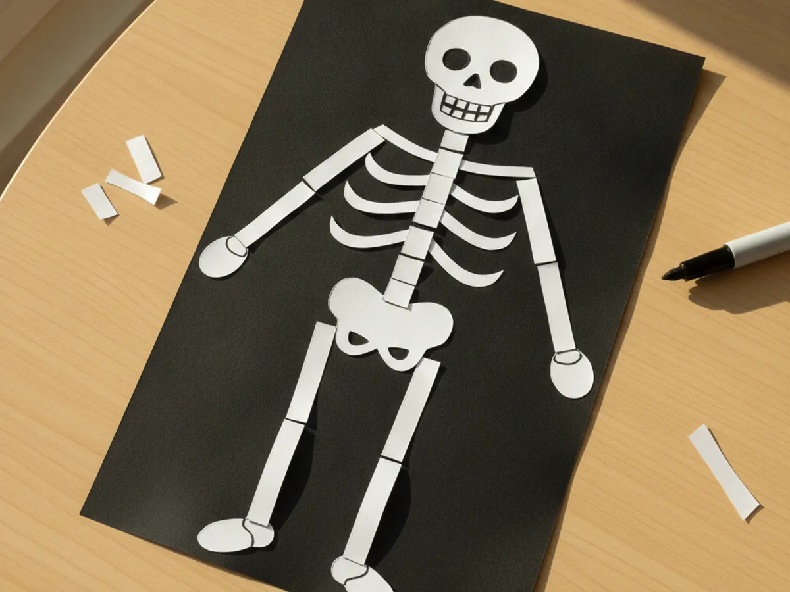
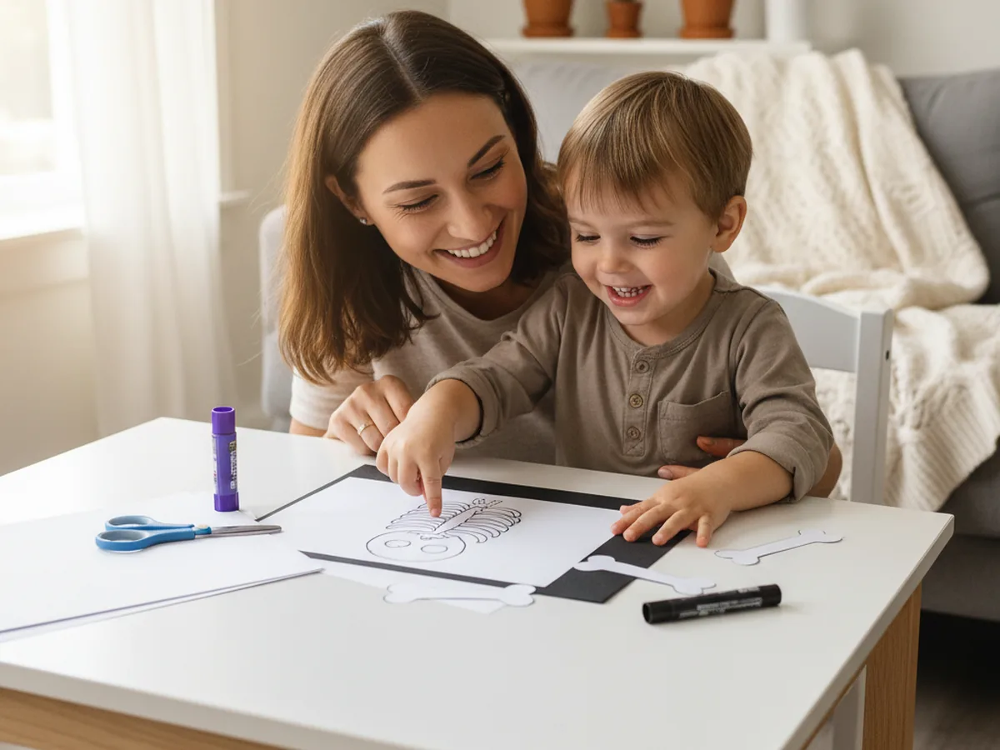
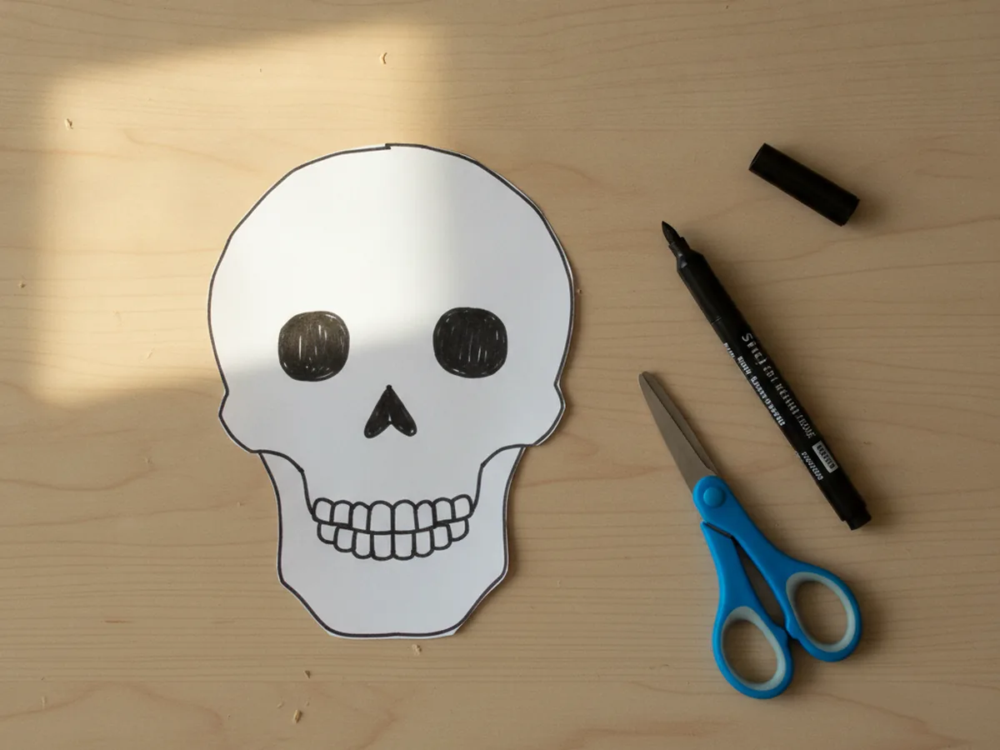
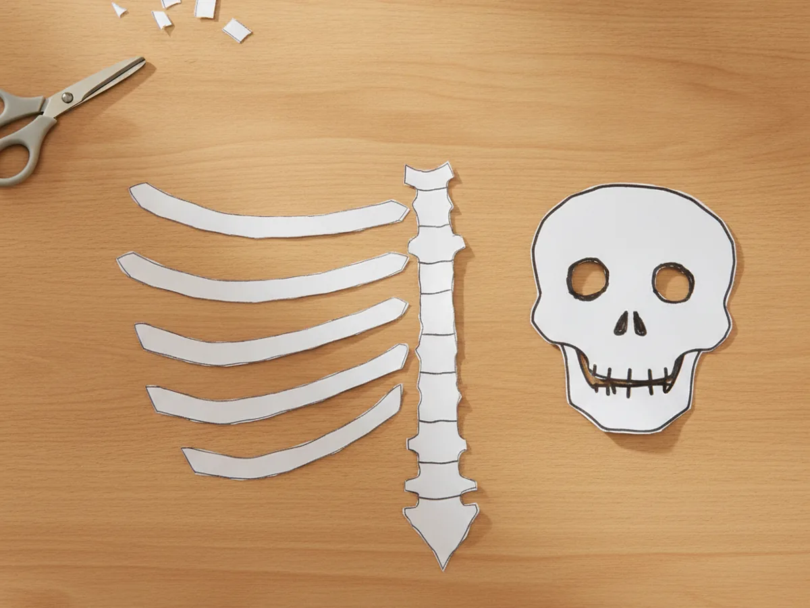
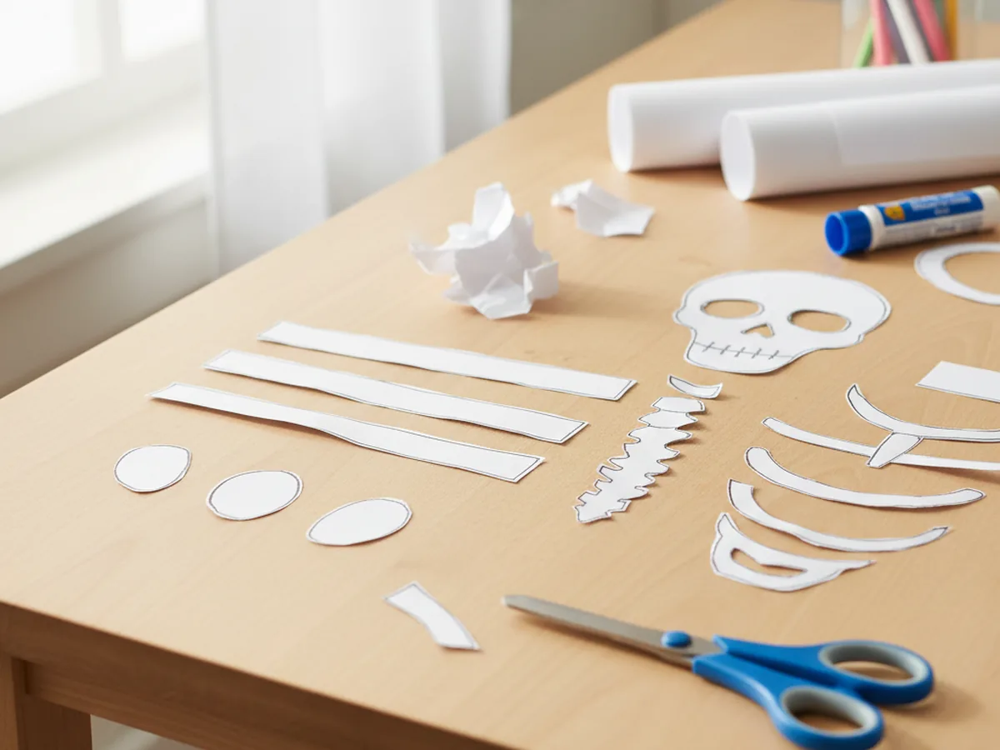
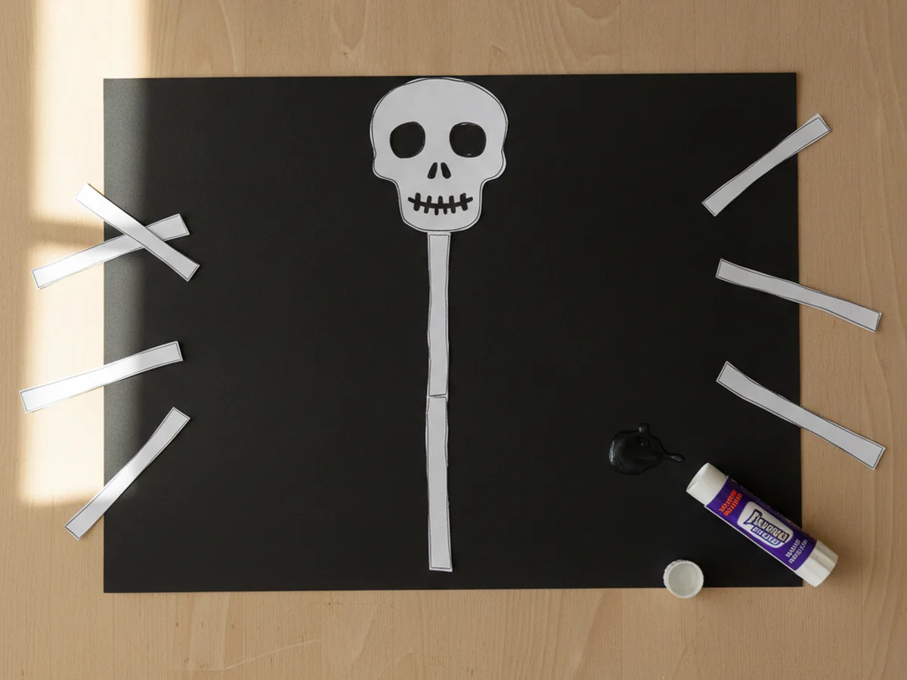
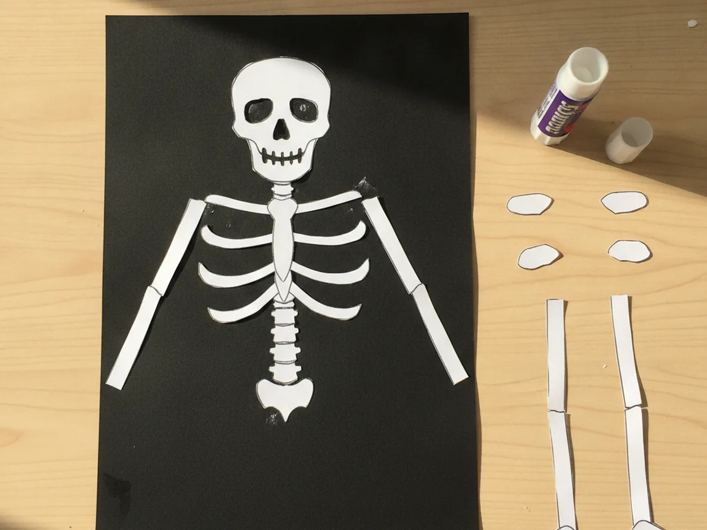
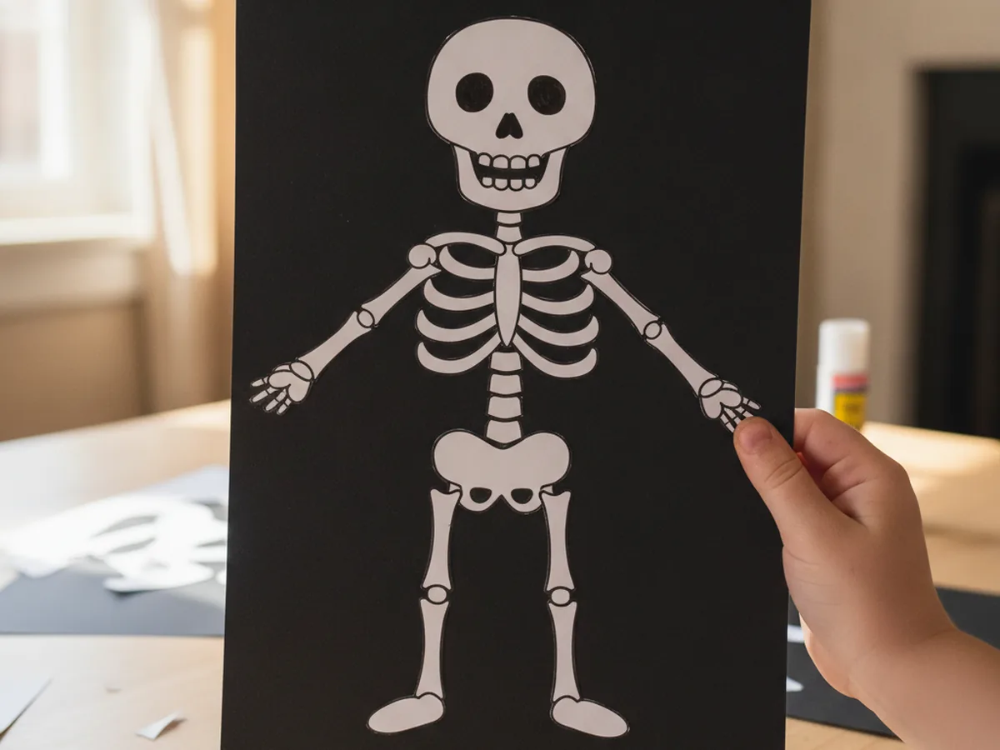

There is something about a friendly little skeleton that makes kids giggle every single time, and this paper skeleton craft lets your child build one bone by bone. With a few white paper shapes, a sheet of black paper, and a black marker for the silly face, you and your little one can put together a whole smiling skeleton in about thirty minutes. No spooky vibes, no mess, just a fun shape-by-shape project that feels a little bit like a puzzle. 💀
The best part about this easy paper skeleton craft is that it grows right in front of your child. First a skull, then a spine, then ribs and arms and legs, until a full little character is smiling back at them. It is the perfect low-stress Halloween activity for a cozy afternoon, and it works just as well for a wiggly preschooler as it does for a focused older kid.
Why Kids Love This Craft
Kids love anything that comes together piece by piece, and a paper skeleton craft feels like building a friendly creature from scratch. Each new bone makes the skeleton look more complete, and that slow reveal keeps little ones leaning in to see what comes next. Drawing the goofy skull face is always the favorite moment, because that is when the skeleton suddenly feels alive and full of personality.
This skeleton paper craft is also quietly wonderful for growing hands and brains. Cutting the long bone strips builds scissor control, lining up the ribs and arms encourages a little planning and patience, and placing each piece on the body helps with spatial awareness. To your child it just feels like play, but so much good learning is tucked inside.
Then comes the proud finish. Holding up a complete smiling skeleton and saying "look what I made" is a real burst of joy for a young child. It is cute instead of creepy, it is theirs, and it looks adorable taped to a window or the fridge all through October. 🎃

What You'll Need
Here is everything you need to make this paper skeleton craft at home. I like to lay the supplies out first so my little one can jump straight into cutting the bones.
- Hamilco White Cardstock (8.5 x 11, 50 sheets), sturdy white paper that makes crisp, easy-to-cut bones.
- Crayola Construction Paper (240 sheets, 12 colors), the black sheet becomes the spooky background for your skeleton.
- Fiskars 5 inch Blunt Tip Kids Scissors (3 pack), safely sized for little hands to snip the paper bone strips.
- Elmer's Washable School Glue Sticks (30 count), mess-free and easy for small hands to stick each bone in place.
- Sharpie Fine Point Black Markers (5 count), perfect for drawing the skull's eyes, nose, and friendly teeth.
- A pencil for lightly tracing the bone shapes before cutting.
Step-by-Step Instructions
This paper skeleton craft comes together in six gentle steps that move from cutting the bones to gluing the whole body in place. Take it slow and let your child help with every part they can.
Step 1: Cut and Decorate the Skull
Start with the most fun bone of all, the skull. Cut a rounded shape from white cardstock with a slightly narrower little jaw at the bottom so it looks like a head. Then hand your child a black marker and draw two round eyes, a tiny upside-down triangle nose, and a row of short lines for teeth. This cheerful skull sets the friendly tone for your whole paper skeleton craft.

Step 2: Cut the Spine and Ribs
Now build the middle of the body. Cut one long white strip for the spine, about five or six inches tall, and then cut four or five shorter strips for the ribs. You can gently curve the rib strips so they look like real bones. These pieces are the heart of the skeleton, so cut them a little chunky and easy to handle.

Step 3: Cut the Arms and Legs
Time to give your skeleton its limbs. Cut two white strips for the arms and two slightly longer strips for the legs. Then snip four small ovals to be the hands and feet. Keep the arm and leg strips simple and straight, since they will bend nicely once they are glued onto the black paper. Your simple paper skeleton craft is really starting to take shape now.

Step 4: Glue the Skull and Spine to Black Paper
Lay out a sheet of black construction paper, because the dark background is what makes the white bones really pop. Glue the skull near the top, then glue the long spine strip straight down the middle just below it. This is the backbone of your paper skeleton craft, so take a second to line it up nice and centered before pressing it down.

Step 5: Add the Ribs and Arms
Now the skeleton starts to look like a real little body. Glue the curved rib strips across the upper part of the spine, stacking them in a neat row so they look like a ribcage. Then attach an arm strip on each side at the shoulders, letting them reach down along the body. Press each bone gently so the glue grabs and the pieces stay put.

Step 6: Finish with Legs, Hands, and Feet
Finish your paper skeleton craft by gluing the two leg strips below the bottom of the spine, then adding the small oval hands at the ends of the arms and the oval feet at the ends of the legs. Step back and take a look, because your child now has a whole smiling skeleton they built bone by bone. Give it a name and find a fun spot to display it. ✨

Variations to Try
Cotton Swab Bones: For a fun texture twist, swap the paper strips for cotton swabs glued onto the black paper. The little rounded ends look just like real bone joints and add a sweet three dimensional feel.
Glow-in-the-Dark Skeleton: Use glow-in-the-dark paint or stickers on the bones for older kids who love a spooky surprise. Turn off the lights and watch the whole skeleton light up at bedtime.
Dancing Skeleton: Skip gluing the arms and legs flat and instead attach them with small paper fasteners. The limbs will swing and wiggle, turning the craft into a silly little puppet your child can make dance.
Final Thoughts
This paper skeleton craft is one of those easy projects that turns an ordinary afternoon into a sweet, giggly moment together. Simple white bones, a dark background, and one goofy marker face are all it takes to make your child feel proud and happy. Make one friendly skeleton, or a whole family of them, and enjoy the smiles as your little one shows off the spooky-cute character they built all by themselves. 💕
More Crafts You'll Love
If your child loved this paper skeleton craft, these other easy Halloween paper projects are perfect to try next: